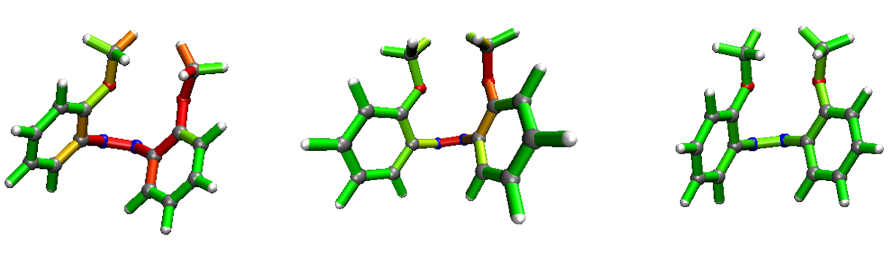

Examples and test files
The JEDI Analysis can be tested by a simple test simulation using the data provided in the Github folder.
Preparation
The test calculations are done using Q-Chem. Methanole is calculated under a hydrostatic pressure of 1 GPa using the X-HCFF method. Both geometries are calculated using the PBE method and a cc-pVDZ basis set.
To generate the needed input geometries, run xyz_gen.py with
python xyz_gen.py path/methanol.out Q_Chem x0
python xyz_gen.py path/methanol_xhcff_strained.out Q_Chem xF
This should produce geometry files in the following layout.
6
C 0.7104452060140838 -3.680831086776408 4.609875799372408
H 1.2020224863101299 -1.8415693555584927 3.6898861081518026
H 0.09229160022123784 -3.2590852610224186 6.587525122941856
H -0.944438392723422 -4.469566726454301 3.595769387893677
O 2.6605056836328758 -5.516751458735709 4.456927539841253
H 4.117526839264233 -4.815219618914076 5.343311349029762
To generate the file containing the energies of both geometries and the energy difference, run
python energies_gen.py path/methanol.out path/methanol_xhcff_strained.out Q_Chem
This should produce an output that looks something like this:
0.014641748931055076 -115.5638587003 -115.57850044923106
Lastly, generate a file containing the Hessian with:
python hess_gen.py path/methanol_freq.out Q_Chem 6
The folder should now contain four files: (1) the Hessian as H_Cart.txt, (2/3) both geometries
as x0.txt and xF.txt and (4) the E_Geoms.txt files.
Note
As of now, the JEDI Analysis needs to be run in the same folder where the program lies. To properly run the JEDI Analysis in the current version, copy the files to the folder the JEDI program lies in.
Main routine
Run the JEDI Analysis using:
python energies_gen.py path/methanol.out path/methanol_xhcff_strained.out Q_Chem
The output is shown and discussed in the Output Section.
Masking atoms
To mask atoms (e.g. surface atoms) the to be masked atoms need to be given in the jedi_kill_atoms_input.txt file.
If this file is left unaltered, no atoms are ignored.
Maximum strain
When analyzing molecule fragments it can be helpful to define a maximum strain that represents the “redest” color in the VMD Analysis. To apply a maximum strain, run the JEDI Analysis using the –v flag and call the maximum strain in hartree.
python jedi.py --v max_strain
This feature was applied in the analysis of molecule fragments, such as in the following figure (maximum strains: left : 0.007 hartree; middle : no maximum strain given, default 0.014 hartree; right: 0.057 hartree).
Adding more atoms in VMD Analysis
In default, the VMD Analysis only displays H, C, N, O and S. It is possible to add one or more atoms that should be colored to these tcl scripts. For this, specify them as individual lines with their RGB values in a file vmd_add.txt. For adding Ti atoms, for example, vmd_add.txt would look like this:
Ti 0.5 0.5 0.5